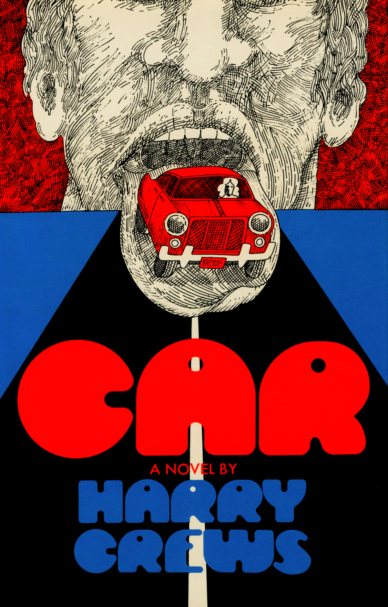

Favorite Books Read This Year
-


- 
Troy Schipdam's 2025 In Review
To Live, by Yu Hua (1992)
Read If You Like: Don Quixote, The Neveryon Tetralogy, George Orwell’s Coming Up for Air
The very first book I read this year is also very likely the best novel I'll read this year as well.
To Live has one of the most interesting conventions a novel can have for me: a nested narrative. The book begins to be told from the perspective of a Chinese folk song collector (very remnicent of our own Alan Lomax in America) named "I". I hears of a man named Fugui, who has an ox that he has also named Fugui, that he is told has a remarkable life story to tell.
Fugui, was born the son of a landlord in pre-Maoist China. He spent his youth gambling all his and his family’s money away, treating people poorly, without a care in the world. A detail I will always remember is that Fugui would force his concubine to carry him on her back as he went about town causing trouble. Eventually Fugui blew through all of his family’s money, and all that was left was his ashamed family, his reluctantly devoted wife, and the rest of his life. To Live is mostly about this aftermath, and the life of a Chinese farmer during the rise of Mao’s Communist government.
The novel is a sensitive but not sentimental account of the life of a man and his family throughout the chaotic beginnings of The People’s Republic of China. Fugui recounts his story with humor and wit, and with an unmistakable sorrowful self-reflection that accepts without bitterness that the past can not now be any other way.
You Must Remember This, by Jeff Kisseloff (1989)
Read If You Like: Low Life by Lucy Sante, A Tree Grows in Brooklyn, Gangs of New York
An Oral History of Manhattan from the 1890s to World War II
| Chapter | Neighborhood | My Favorite Interview |
| 1 | Lower East Side | 6 |
| 2 | Upper East Side | 9 |
| 3 | Upper West Side | 9 |
| 4 | Northern Manhattan | 9 |
| 5 | Harlem | 9 |
| 6 | East Harlem | 9 |
| 7 | The East Side | 9 |
| 8 | Greenwich Village | 9 |
| 9 | Chelsea | 9 |
| 10 | Hell's Kitchen | 9 |
Car, by Harry Crews (1972)
Read If You Like: Anything by J.G. Ballard, Anything by Kobo Abe, Surrealism
This one has the best elevator pitch: The son of a car scrap yard owner sets his mind on a peculiar stunt: to eat an entire car. The event is to be televized and broadcasted internationally, through networks that will make him a star, and make his family rich. Freaky.
The book was awesome, but as I reflect on it now, I wonder how much of this was influenced by Harry Crews growing up in depression era America. I'm also reminded of the 1969 movie "They Shoot Horses, Don't They?", about a dance-a-thon held during the great depression where the last couple standing wins a (somewhat paltry, if I remember correct) sum of money. People literally dance themselves to death! There's also the incredible documentary "Hands on a Hard Body", about a similar competition, where a group of people have to keep their hands on a car as long as possible, and whoever is the last one still touching it, wins the car. That competition had to end due to a participant comitting suicide after losing and suffering a bought of psychosis due to the stress. Freakier...
I think I like Car a lot better than Crash. The comparison is so obvious, and I do wonder how many people come to this book not at least having some knowledge of the other. Whereas Crash is purposefully smug, cold, procedurally callous, Car is lonely, naive, simple in its language and sincere in its plot. Car has a heart, or is at least desperately searching for one. Both books take seriously the unique and ubiquitous specter of American Consumerism, and instead of simple condemnation speculate convincingly about its libidinal origins.